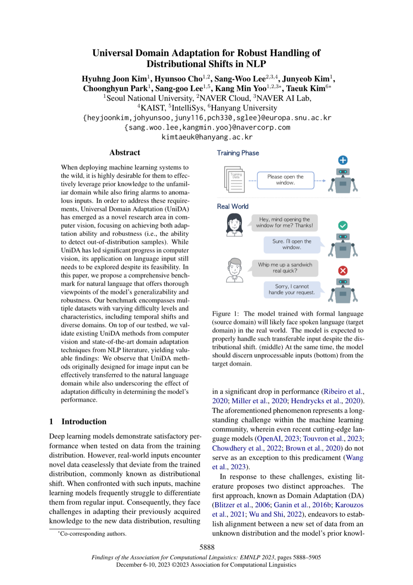

Universal Domain Adaptation for Robust Handling of Distributional Shifts in NLP
EMNLP 2023 Findings
Hyuhng Joon Kim, Hyunsoo Cho, Sang-Woo Lee, Junyeob Kim, Choonghyun Park, Sang-goo Lee, Kang Min Yoo, Taeuk Kim
One-Line Summary
Universal domain adaptation for robust handling of distributional shifts

Figure 1. Universal domain adaptation for robust handling of distributional shifts in NLP, addressing the challenge of adapting models across diverse domains.
Key Points
Proposes a universal domain adaptation methodology that effectively bridges gaps across diverse domains
Presents an adaptation strategy that operates reliably even when the label spaces of source and target domains differ